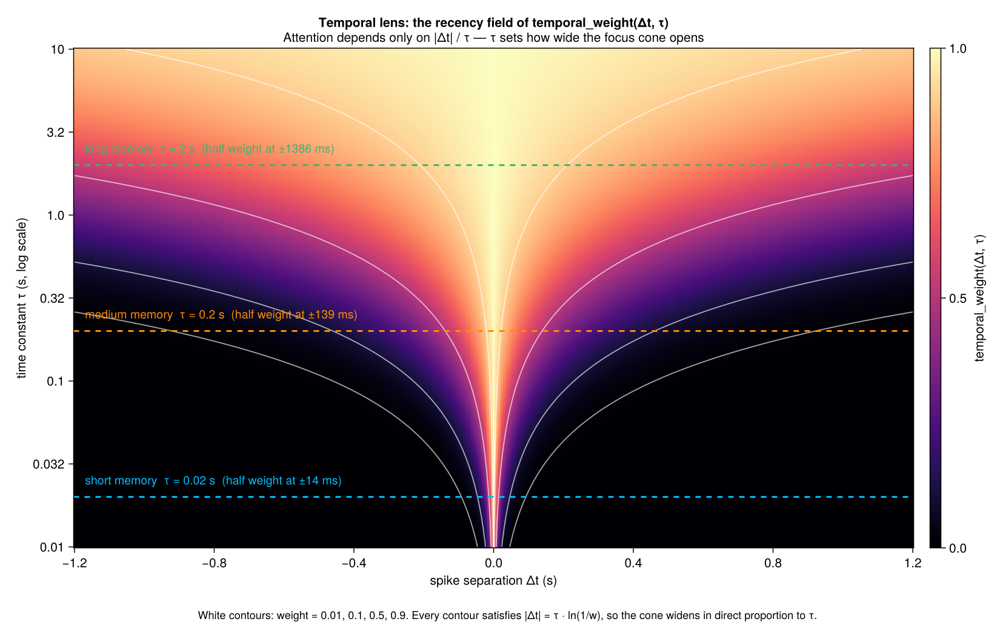
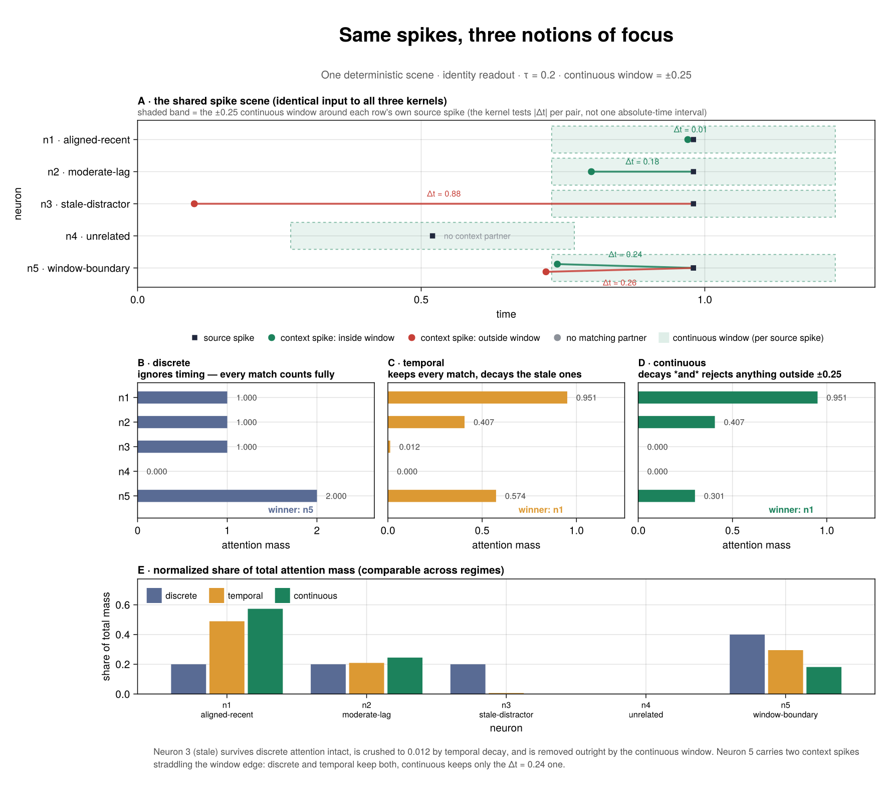
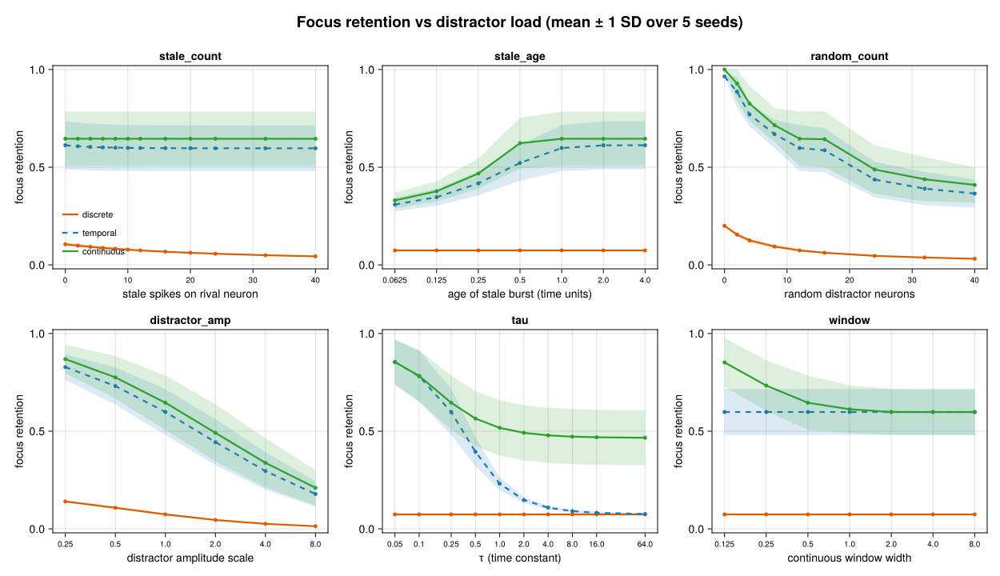
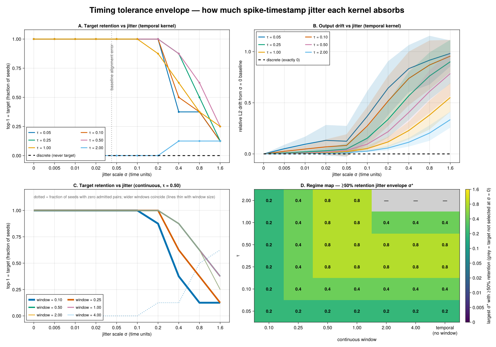
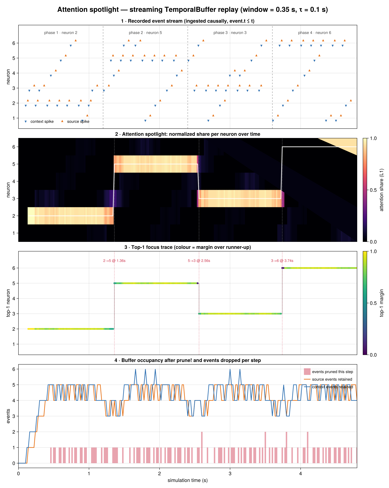
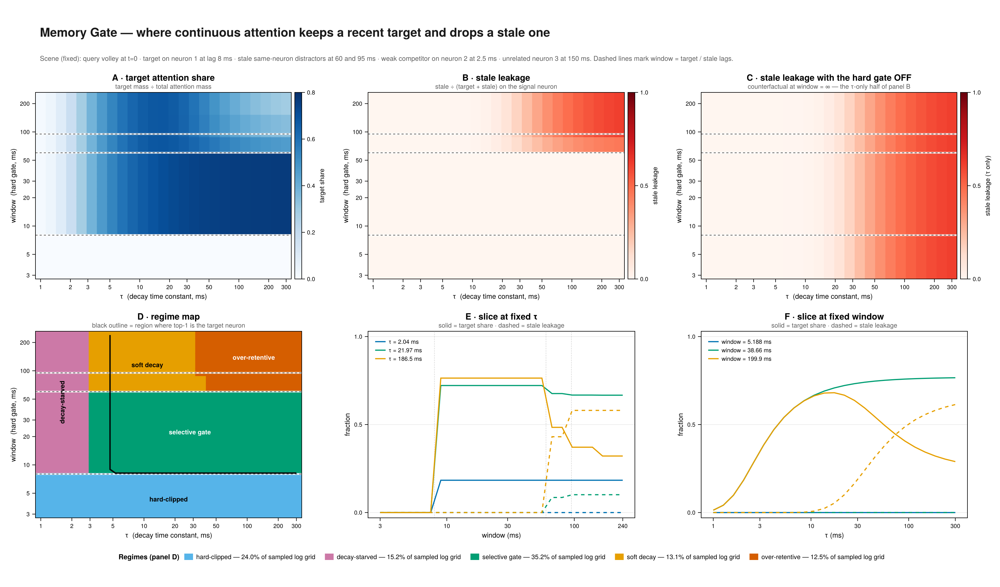
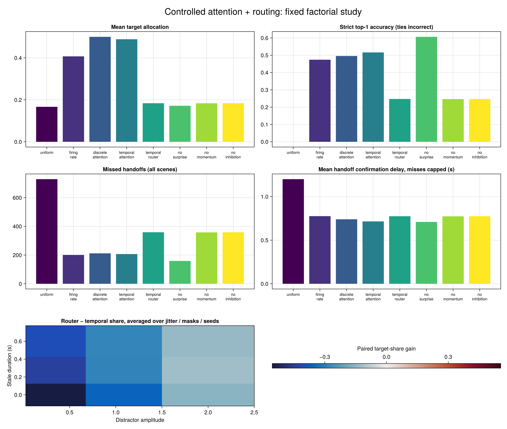
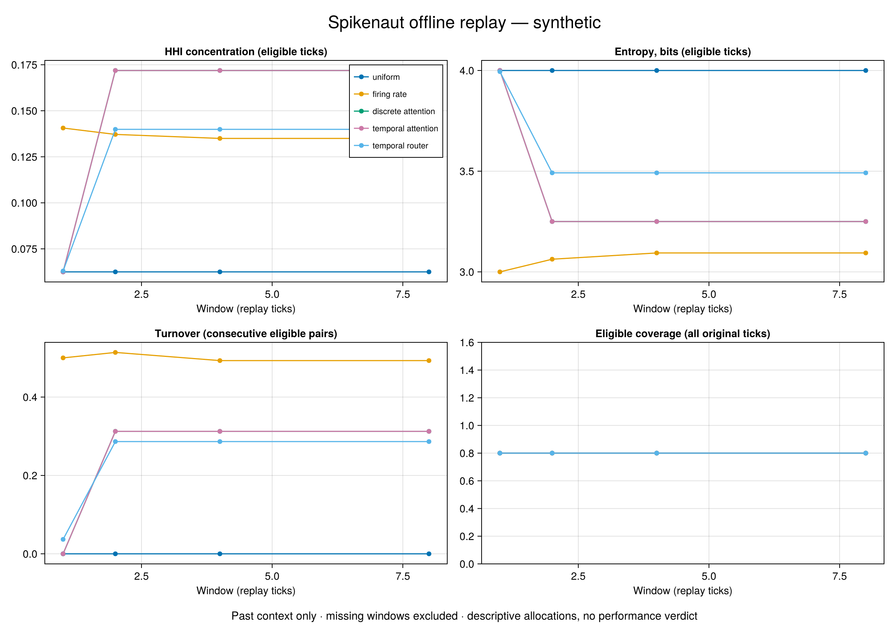

Experiment Gallery
The research harness contains six deterministic, synthetic characterizations of NeuroPulse's coincidence-attention kernels, plus a controlled causal attention-and-routing study. They were ported with their scenes, sweep grids, decision rules, and contrary findings from rmems/TemporalFocus.jl at c0b51e2f7d473411390dc4a7667fd161326c6492.
These results describe controlled spike scenes. They do not characterize a real Spikenaut trace, prove training improvement, or claim a deployed runtime benefit. Real trace characterization is a later downstream step with its own recorded input digest and adapter boundary.
Reproduce
From the repository root:
julia +1.12.7 --project=experiments -e 'using Pkg; Pkg.develop(path="."); Pkg.instantiate()'
julia +1.12.7 --project=experiments experiments/run_all.jl --out-dir experiments/resultsGive concurrent runs distinct --out-dir roots so they do not overwrite one another's artifacts.
Every entrypoint validates that the canonical NeuroPulse UUID resolves to this NeuroPulse checkout. A run contains config.toml, metrics.csv, figure.png, summary.md, provenance.toml, and snapshots of the exact resolved Project and Manifest.
Download the recorded run
Download the characterization evidence bundle contains all seven completed runs: configurations, numerical metrics, figures, interpretations, source/input hashes, and resolved environment snapshots. The archive includes the additional Temporal Lens and Focus Under Fire figures, and their digests are recorded in each run's provenance. These runs were generated from clean NeuroPulse commit 14e68ac on Julia 1.12.7.
Archive SHA-256: 085d969071f6cd702a614b5bccf6a54261b7155e90e1a24c0523725b2e9ee8c7. The archived environment records the original local checkout path; follow the setup above with Pkg.develop(path=".") to bind the canonical UUID to your checkout when reproducing.
The archive also retains the package name recorded by that historical run. Those bytes stay unchanged as provenance. New runs from the renamed checkout record NeuroPulse; compare their numerical CSVs with the archive while expecting timestamps and package/config provenance to differ.
Controlled findings
| Experiment | Controlled question | Observed verdict |
|---|---|---|
| Temporal Lens | How does coincidence weight vary over Δt × τ? | The sampled field is symmetric, follows the exponential ratio law, and agrees bitwise with the Float32 reference over the grid. |
| Three Regimes | What do discrete, temporal, and continuous kernels preserve on the same scene? | Discrete keeps every same-neuron match, temporal decays separated pairs, and continuous also rejects pairs outside its hard window. |
| Focus Under Fire | How does controlled distractor load affect focus? | The pre-registered sweep separates the kernel behaviors; this is robustness on synthetic distractors, not a workload claim. |
| Jitter Test | How much synthetic timestamp jitter can each configuration absorb? | Discrete attention is invariant to timestamp jitter; temporal tolerance varies non-monotonically with τ on the fixed scene. |
| Attention Spotlight | How does focus move as deterministic buffers fill and prune? | The replay produces four stable focus segments and three handoffs while recording the exact generated scenario. |
| Memory Gate | Where does the τ × window plane retain a target and reject stale pairs? | The grid contains clipped, decay-starved, selective, soft-decay, and over-retentive regimes; the best region is a corridor rather than a unique point. |
Rendered outputs
Temporal Lens

Three Regimes

Focus Under Fire

Jitter Test

Attention Spotlight

Memory Gate

Controlled attention plus routing
The routing study reuses the spotlight timing and target sequence (2 → 5 → 3 → 6), with five observed consecutive correct samples required to confirm each handoff. The full fixed grid contains 243 paired scenes: distractor amplitudes [0.35, 1.0, 2.0], stale previous-target durations [0, 0.25, 0.60] seconds, independent timestamp jitter amplitudes [0, 0.012, 0.06] seconds, missing-interval probabilities [0, 0.15, 0.40], and seeds [11, 29, 47]. All eight methods consume the same observations in each scene. The existing Float32 sampling schedule is preserved, including the near-end grid point and exact horizon sample (242 ticks).
The primary routing-benefit hypothesis is unsupported on this grid. Adding the default router to temporal attention reduces mean target share and strict accuracy and increases missed handoffs. These are controlled synthetic results, not measured Spikenaut deployment performance or an estimate of learning benefit.
| Method | Mean target share | Strict top-1 | Missed / handoffs | Capped delay (s) |
|---|---|---|---|---|
| Uniform | 0.16667 | 0.00000 | 729 / 729 | 1.20000 |
| Firing rate | 0.40723 | 0.47429 | 201 / 729 | 0.77580 |
| Timing-agnostic attention | 0.50031 | 0.49583 | 212 / 729 | 0.73967 |
| Temporal attention | 0.48883 | 0.51644 | 207 / 729 | 0.71523 |
| Temporal + router | 0.18383 | 0.24751 | 359 / 729 | 0.77473 |
| Router without surprise | 0.17164 | 0.60652 | 159 / 729 | 0.70946 |
| Router without momentum | 0.18358 | 0.24669 | 358 / 729 | 0.77374 |
| Router without inhibition | 0.18397 | 0.24742 | 359 / 729 | 0.77473 |
The predeclared descriptive decision rule compares each method to temporal attention, using paired scene/seed differences. Support requires mean target share gain ≥ 0.01, strict-top1 gain ≥ 0.02, and no increase in missed handoffs or phase-capped delay. Nonpositive share/accuracy gain or increased misses/delay is unsupported; smaller positive gains with no regressions are inconclusive. The primary full-router differences are −0.30500 share and −0.26894 accuracy. All seven comparisons fail the joint rule. The no-surprise ablation's improved accuracy is retained alongside its worse target allocation; it is not selected as a new tuned configuration. This rule is a finite-grid comparison, not a population-level significance test.
A single neuron maps to each region. Density is the fraction of observed recent sample bins containing source spikes, bounded in [0,1]; the router receives a one-element readout containing the normalized temporal attention score, or zero when no temporal evidence exists. Each router uses equal 0.02 off-diagonal inhibition and zero diagonal, except the explicit no-inhibition ablation. The router scores relative readout surprise, density and momentum; high attention share does not itself imply high router allocation.
Ground-truth targets and event roles are stripped before runtime ingestion. Missing intervals discard unseen arrivals and hold allocations/router state; observed silence still advances the router. No-evidence coverage is computed from each method's actual inputs and is distinct from missing coverage. Ties are incorrect for strict top-1. Missing observations break the sustained-focus streak. Every handoff remains in the output, with explicit failure plus blank raw delay on a miss; comparison caps those delays at the 1.2-second phase length. Average observation coverage is 0.81114. Across all scheduled ticks, observed no-evidence coverage is 0.04387 for attention, 0.01979 for rate/router methods, and 0.81114 for the data-independent uniform comparator.

Reproduce from the checkout with Julia 1.12.7:
julia +1.12.7 --project=experiments experiments/routing_selection.jl \
--config experiments/configs/routing_selection.toml --out-dir experiments/results
julia +1.12.7 --project=experiments experiments/test/runtests.jlThe routing study evidence bundle contains the effective configuration, scene/method metrics, every handoff, per-tick allocations/evidence, paired differences, generated events and masks, aggregate verdicts, figure, summary, source/input hashes, and resolved environment snapshots. It was generated from clean source commit 985e22a. Two complete runs produce byte-identical numerical CSV artifacts. The original spotlight metrics are also byte-identical after extraction of its reusable generator.
Routing evidence archive SHA-256: 90a1d5e66ef277281a3d34eac0e12d91e8d8c5028265d7c9dec69ceb520f18f8
Offline Spikenaut replay
Synthetic method fixture; descriptive allocations only. This study consumes an actual frozen replay producer's trace.jsonl and manifest.json, but its input telemetry is synthetic. It is not measured hardware evidence, a holdout, or a performance result. The fixture was generated twice with identical bytes from Spikenaut-SNN commit 72e624eb54fa9f688d8d2e9d0fe86ebf467d6ba3 and its original telemetry, trace, manifest and attribution are committed under experiments/fixtures/spikenaut/. The source manifest remains unchanged, including source.dirty: null; null is not rewritten as a clean-checkout claim.
The fixture has 10 original ticks in two five-tick sessions, 16 neurons and 32 spikes from the shipped model bank (k=4). One neuron maps to one analysis region, with explicit zero-based producer to one-based Julia conversion. This mapping is not a claim about neuron function. Source is the current tick; context is strictly earlier ticks in the same session. The current event cannot match itself. The declared window grid is [1, 2, 4, 8] ticks with tau=2 ticks. There are no usable timestamps, so these are never seconds and staleness remains unknown.
| Window (ticks) | Temporal attention HHI | Attention entropy (bits) | Router HHI | Router entropy (bits) | Router turnover | Eligible / all |
|---|---|---|---|---|---|---|
| 1 | 0.06250 | 4.00000 | 0.06299 | 3.99437 | 0.03690 | 8 / 10 |
| 2 | 0.17188 | 3.25000 | 0.13991 | 3.49167 | 0.28640 | 8 / 10 |
| 4 | 0.17188 | 3.25000 | 0.13991 | 3.49167 | 0.28640 | 8 / 10 |
| 8 | 0.17188 | 3.25000 | 0.13991 | 3.49167 | 0.28640 | 8 / 10 |
The full table also includes uniform, firing-rate and discrete-attention comparators. Discrete and temporal attention have identical normalized allocations on this particular small fixture; this does not establish their general equivalence. At window 1 there are no matching current/past neuron pairs, so all eight eligible attention samples have zero evidence and uniform fallback allocations. At larger windows, six of eight remain zero-evidence. Uniform HHI is 1/16 and entropy is 4 bits; more concentration is not inherently better. All methods have tied maxima on this fixture, so none has a unique winner. There are no target labels or accuracy/supervisor conclusions.
Any missing sensor makes its whole row unobserved. Comparisons whose closed [t-window,t] contains that row are excluded. The adapter retains original global ticks, discards missing-row arrivals, clears local history and resets the router; subsequent observed context accumulates while the router stays reset until the local window clears. Sessions reset all analysis state independently. This does not undo upstream LIF state that already evolved through encode-zero dropout, and local eligibility does not prove upstream recovery. This fixture's two missing rows end the first session, so its constant 80% eligible coverage does not demonstrate same-session recovery. Separate focused tests exercise exclusion and local state isolation when observations resume later in a session.
Two observed silent ticks stay separate from the two missing ticks. Missing or excluded evidence/statistics remain blank in CSVs rather than becoming observed zeros. Means use eligible ticks, including zero-evidence uniform fallbacks. Turnover is total variation across the six consecutive eligible same-session pairs, with no bridge across exclusions or boundaries. HHI is sum(p²); entropy is -sum(p log2 p) in bits. Future external traces can have different eligible sets across windows, limiting direct comparisons of their means.

julia +1.12.7 --project=experiments experiments/spikenaut_replay.jl --out-dir experiments/results
julia +1.12.7 --project=experiments experiments/spikenaut_replay.jl \
--trace /path/to/trace.jsonl --manifest /path/to/manifest.json \
--config experiments/configs/spikenaut_replay.toml --out-dir /path/to/resultsBoth external inputs are required together and default to unverified/unspecified. The known synthetic trace is recognized by SHA-256 even with explicit paths or renamed copies, and must remain labeled synthetic. --data-kind measured-user-declared is only a caller's provenance label, not independent attestation. Schemas, trace digest, finite input shapes, neuron IDs, consecutive global steps, source-line ordering, non-repeating sessions and manifest aggregates are checked before analysis. The producer's checkpoint and external telemetry are not independently re-attested by this adapter, and upstream decision diagnostics do not steer it.
The compact replay evidence bundle contains all metrics, every method/tick allocation, coverage masks, exact input snapshots, original synthetic telemetry, declared/effective configurations, figure, summary, attribution, hashes and resolved environment snapshots. It was generated from clean code commit c4ce1ef. Two complete runs produced byte-identical metrics, traces, coverage, configuration, summary and PNG. The generated UTC timestamp exists only in provenance. Root APIs, prior experiments and their evidence were preserved by this study.
Replay evidence archive SHA-256: b6673d4a9948f529315b7a3e6e38e228bdb81ca0cefe2cb84e2c1b9e42ff7fbc